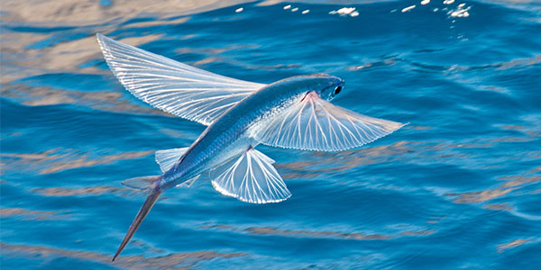
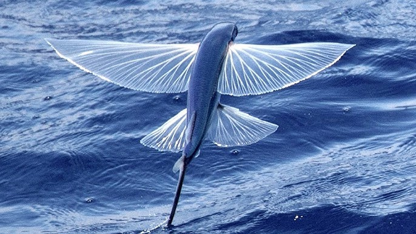

Main information

The Exocoetidae are a family of marine ray-finned fish in the order Beloniformes, known colloquially
as
flying fish or flying cod. About 64 species are grouped in seven genera. While they cannot fly in
the
same way a bird does, flying fish can make powerful, self-propelled leaps out of the water where
their
long wing-like fins enable gliding for considerable distances above the water's surface. The main
reason
for this behavior is thought to be to escape from underwater predators, which include
swordfish, mackerel, tuna, and marlin, among others, though their periods of flight expose them to
attack by avian predators such as frigate birds.
Barbados is known as "the land of the flying fish" and the fish is one of the national symbols of
the
country. The Exocet missile is named after them, as variants are launched from underwater, and take
a
low trajectory, skimming the surface, before striking their targets.
Importance

Barbados:
Flying fish for sale in local fish market of Saint Martin's Island, Bangladesh
Barbados is known as "the land of the flying fish", and the fish is one of the national symbols
of the country. Once abundant, it migrated between the warm, coral-filled Atlantic Ocean
surrounding the island of Barbados and the plankton-rich outflows of the Orinoco River in
Venezuela.
Just after the completion of the Bridgetown Harbor / Deep Water Harbor in Bridgetown, Barbados
had an increase of ship visits, linking the island to the world. The overall health of the coral
reefs surrounding Barbados suffered due to ship-based pollution. Additionally, Barbadian
overfishing pushed them closer to the Orinoco delta, no longer returning to Barbados in large
numbers. Today, the flying fish only migrate as far north as Tobago, around 120 nmi (220 km; 140
mi) southwest of Barbados. Despite the change, flying fish remain a coveted delicacy.
Many aspects of Barbadian culture center around the flying fish; it is depicted on coins, as
sculptures in fountains, in artwork, and as part of the official logo of the Barbados Tourism
Authority. Additionally, the Barbadian coat of arms features a pelican and dolphinfish on either
side of the shield, but the dolphinfish resembles a flying fish. Furthermore, actual artistic
renditions and holograms of the flying fish are also present within the Barbadian
passport.
Maritime disputes:
Further information: Barbados v. Trinidad and Tobago
Flying fish have also been gaining in popularity in other islands, fueling several maritime
disputes. In 2006, the council of the United Nations Convention on the Law of the Sea
the maritime boundaries between Barbados and Trinidad and Tobago over the flying fish dispute,
which gradually raised tensions between the neighbours. The ruling stated both countries
must preserve stocks for the future. Barbadian fishers still follow the flying fish southward.
Indonesia:
Makassar fishermen in south Sulawesi have been catching flying fish (torani) in special boats
called patorani for centuries developing their own sailing traditions along the way. These
fishermen were able to sail as far as Kimberley region in west of Australia reaching the
indigenous people there.